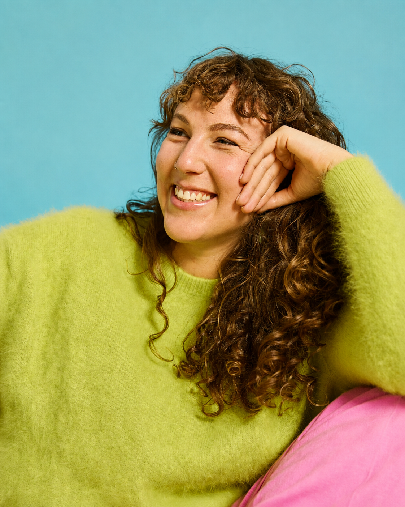
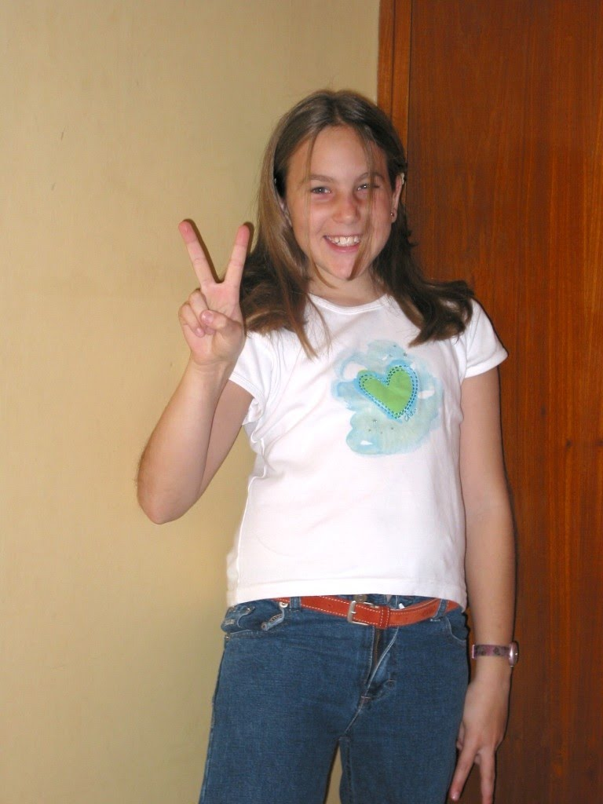
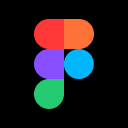
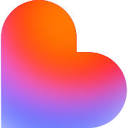
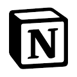
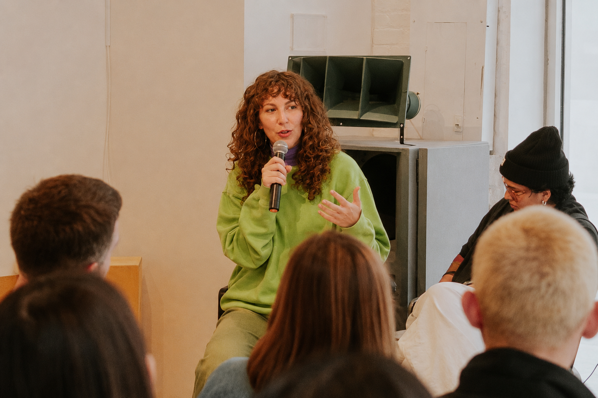

Soy Martina Hirschler.Diseñadora · Barcelona Investigo, mapeo el sistema y facilito la conversación antes de diseñar la primera pantalla.
Hace ~12 años que diseño: de marcas e interfaces a servicios, estrategia y facilitación.
Ahora trabajo donde el problema todavía no tiene forma.

A los 8 años hacía presentaciones de PowerPoint por diversión.........
No ha cambiado tanto la cosa. Sigo ordenando ideas para que otras personas las entiendan; solo que ahora también hay usuarios, sistemas y equipos de por medio.
cuantas más animaciones, más cool

Trabajo mejor cuando el problema todavía está desordenado.
Cuando varios equipos no se ponen de acuerdo y hay que descubrir cuál es el problema real. Hablo con la gente, dibujo el sistema que hay detrás de la experiencia, encuentro patrones y lo convierto en una dirección con la que se pueda trabajar.
- 01Investigarescuchar a las personas
- 02Dar sentidoencontrar el patrón
- 03Alinearmisma sala, mismo problema
- 04Estrategiaelegir hacia dónde
- 05Conceptoimaginar el qué
- 06Direcciónalgo accionable
- 07Diseñarque sí, todavía lo hago
(en vez de ticket → pantalla → componente → handoff)
GLOSARIO
Hard skills
Soft skills
Herramientas

Figma FigJam Miro Coveo
Coveo
 ChatGPT
ChatGPT
 Claude
Claude

Lovable
Notion Suite Adobe
Suite Adobe
Idiomas

Mi interfaz favorita a veces es una sala poniéndose de acuerdo.
Me atraen el impacto social, la educación, el cuidado y la accesibilidad.
El propósito también puede venir de hacer que un servicio o un equipo funcione mucho mejor.


Si has llegado hasta aquí, somos prácticamente amigos.
Escríbeme y lo hacemos oficial.
Abierta a algo nuevo.